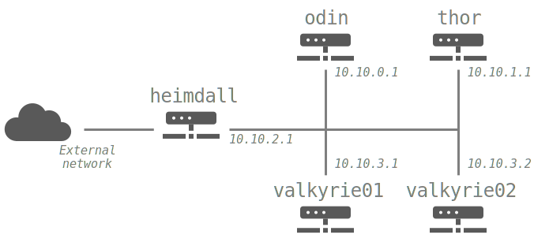

3. [Training] - Cluster SysAdmin¶
This tutorial tries to teach how to install manually a basic HPC cluster. This part is optional and if you already have this knowledge, you can skip it and proceed to Ansible training, or to BlueBanquise bootstrap.
This tutorial will focus on simplicity. All software used are very common and when facing an error, a quick look on the web will most of the time solves the issue.
If you face any issues with this tutorial, do not hesitate to contact us, we are always glad to help.
Note
This tutorial is based on RockyLinux, but can be adapted to other distribution with ease.
3.1. Hardware requirements¶
The following hardware is needed to perform this training:
Minimal configuration to do the training: Laptop/workstation with 4Go RAM and 20Go disk. VT-x instructions MUST be activated in the BIOS. VMs will be used.
Recommended configuration to do the training: Laptop/workstation with 8go or 16go, and 40Go disk. VT-x instructions MUST be activated in the BIOS. VMs will be used.
Best configuration to do the training: A real cluster, with real physical servers.
3.2. Useful commands¶
General commands:
Load a kernel module :
modprobe mymodule -vUnload a kernel module :
modprobe -r mymoduleList loaded kernel modules :
lsmodCheck listening processes and port used :
netstat -autGet hardware information (use –help for more details) :
inxiCheck network configuration :
ip addOpen a screen :
screen -S sphenList screens :
screen -lsJoin a screen :
screen -x sphenDetach a screen : use
Ctrl+a+don keyboardChange keyboard language in current terminal :
loadkeys fr(azerty),loadkeys us(qwerty)Remount / when in read only (often in recovery mode) :
mount -o remount,rw /Apply a patch on a file :
patch myfile.txt < mypatch.txtDo a patch from original and modified file :
diff -Naur original.txt modified.txt
IPMI commands for remote control :
Boot, very useful for very slow to boot systems (bios can be replaced with pxe or cdrom or disk) :
ipmitool -I lanplus -H bmc5 -U user -P password chassis bootdev biosMake boot persistent :
ipmitool -I lanplus -H bmc5 -U user -P password chassis bootdev disk options=persistentControl power (reset car be replaced with soft or cycle or off or on) :
ipmitool -I lanplus -H bmc5 -U user -P password chassis power resetActivate remote console (use Enter, then & then . to exit) :
ipmitool -H bmc5 -U user -P password -I lanplus -e \& sol activate
More: https://support.pivotal.io/hc/en-us/articles/206396927-How-to-work-on-IPMI-and-IPMITOOL Note: when using sol activate, if keyboard does not work, try using the same command into a screen, this may solve the issue.
Clush usage :
To do a command on all nodes :
clush -bw node1,node[4-5] "hostname"To copy a file on all nodes :
clush -w node1,node[4-5] –copy /root/slurm.conf –dest=/etc/slurm/slurm.confTo replace a string in a file of all nodes :
clush -bw compute1[34-67] 'sed -i "s/10.0.0.1/nfsserver/g" /etc/fstab'
3.3. Vocabulary¶
3.3.1. Basic concepts¶
Few words on vocabulary used:
- To avoid confusion around “server” word:
a node refers to a physical or virtual machine with an operating system on it.
a server refer to a software daemon listening on the network.
A NIC is a network interface controller (the thing you plug the Ethernet cable in ツ).
The system administrator, or sysadmin, will be you, the person in charge of managing the cluster.
Pets and Cattles * A pet node is a key node, that you MUST keep healthy and that is considered difficult to reinstall. * A cattle node, is a “trashable” node, that you consider non vital to production and that is considered easy to reinstall.

Note
Original black and white image from Roger Rössing, otothek_df_roe-neg_0006125_016_Sch%C3%A4fer_vor_seiner_Schafherde_auf_einer_Wiese_im_Harz.jpg)
An HPC cluster can be seen like a sheep flock. The admin sys (shepherd), the management node (shepherd dog), and the compute/login nodes (sheep).
This leads to two types of nodes, like cloud computing: pets (shepherd dog) and cattle (sheep). While the safety of your pets must be absolute for good production, losing cattle is common and considered normal.
In High Performance Computing, most of the time, management node, file system (io) nodes, etc, are considered as pets. On the other hand, compute nodes and login nodes are considered cattle.
Same philosophy apply for file systems: some must be safe, others can be faster but “losable”, and users have to understand it and take precautions. In this tutorial, /home will be considered safe, and /scratch fast but losable.
3.3.2. Basic words¶
An HPC cluster is an aggregate of physical compute nodes dedicated to intensive calculations. Most of the time, these calculations are related to sciences, but can also be used in other domains, like finances.
On general HPC clusters, users will be able to login through ssh on dedicated nodes (called login nodes), upload their code and data, then compile their code, and launch jobs (calculations) on the cluster.
To maintain the cluster synchronized and to provide features, multiple services are running on management node.
Most of the time, a cluster is composed of:
An administration node or management node (pet), whose purpose is to host all core resources of the cluster.
IO nodes (pet), whose purpose is to provide storage for users. Basic storage is based on NFS, and advanced storage (optional) on parallel file systems.
Login nodes (cattle), whose purpose is to be the place where users interact with the cluster and with the job scheduler, and manage their code and data.
Compute nodes (cattle), whose purpose is to provide calculation resources.
A node is the name given to a server inside an HPC cluster. Nodes are most of the time equipped with a BMC for Baseboard Management Controller, which is kind of a small server connected on the server motherboard and allow manipulating the server remotely (power on, power off, boot order, status, console, etc.).
Sometime, servers are racked into a chassis that can embed an CMC for Chassis Management Controller. Servers and chassis can even be racked into a rack that can embed an RMC for Rack Management Controller.
On the operating system (OS), a service is a software daemon managed by systemd. For example, the DHCP server service is in charge of attributing nodes IP addresses on the network depending of their MAC address (each network interface has its own MAC). Another example, the job scheduler, is also used as a service. Etc.
Management node, called here odin, is the node hosting most of vital services of the cluster.
Interconnect network, often based on the InfiniBand technology (IB), is used in parallel of the Ethernet network (Eth). Interconnect is mainly used for calculations (transfer data between process of running codes) and is used to export the fast file systems, exported by the IO nodes. InfiniBand has much lower latency and much higher bandwidth than Ethernet network.
3.3.3. Understanding services¶
As said above, management node host multiple basic services needed to run the cluster:
The repository server: based on http protocol, it provides packages (rpm) to all nodes of the cluster. Service is
httpd(Apache).The tftp server: based on tftp protocol, it provides PXE very basic files to initialize boot sequence on the remote servers. Service is
fbtftp(Facebook Tftp).The dhcp server: provides ip for all nodes and BMC on the network. Ip are attributed using MAC addresses of network interfaces. Service is
dhcpd(ISC DHCP).The dns server: provides link between ip and hostname, and the opposite. Service is
named(bind9).The time server: provides a single and synchronized clock for all equipment of the cluster. More important than it seems. Service is
chronyd(Chrony).The pxe stack: represent the aggregate of the repository server, the tftp server, the dhcp server, the dns server and the time server. Used to deploy OS on nodes on the cluster using the network.
The nfs server: export simple storage spaces and allows nodes to mount these exported spaces locally (/home, /opt, etc. ). Service is
nfs-server.The LDAP server: provides centralized users authentication for all nodes. Is optional for small clusters. Service is
slapd(OpenLDAP).The job scheduler server: manage computational resources, and spread jobs from users on the cluster. Service is
slurmctld(Slurm).The monitoring server: monitor the cluster to provide metrics, and raise alerts in case of issues. Service is
prometheus(Prometheus).
3.3.4. Computational resources management¶
The job scheduler is the conductor of computational resources of the cluster.
A job is a small script, that contains instructions on how to execute the calculation program, and that also contains information for to the job scheduler (required job duration, how much resources are needed, etc.).
When a user ask the job scheduler to execute a job, which is call submitting a job, the job enter jobs queue. The job scheduler is then in charge of finding free computational resources depending of the needs of the job, then launching the job and monitoring it during its execution. Note that the job scheduler is in charge of managing all jobs to ensure maximum usage of computational resources, which is why sometime, the job scheduler will put some jobs on hold for a long time in a queue, to wait for free resources. In return, after user has submitted a job, the job scheduler will provide user a job ID to allow following job state in the jobs queue and during its execution.
3.4. Cluster description¶
3.4.1. Architecture¶
The cluster structure for this training will be as follows:
On the hardware side:
One master node called
odin.One storage node called
thor, based one NFS, will be deployed, for /home and /software.One login node called
heimdallfor users to login.Multiple compute nodes, called
valkyrieswill then be deployed on the fly with PXE.
3.4.2. Network¶
Network information:
The whole cluster will use a single subnet 10.10.0.0/16. IP used will be (nic name to be set depending of your hardware):
odin: 10.10.0.1 (nic: enp0s3)
thor : 10.10.1.1 (nic: enp0s3)
heimdall: 10.10.2.1 (nic: enp0s3), 192.168.1.77 (nic: enp0s8) for users access
valkyrieX: 10.10.3.X (nic: enp0s3)
Domain name will be cluster.local
Note: if you plan to test this tutorial in Virtualbox, 10.10.X.X range may already been taken by Virtualbox NAT. In this case, use another subnet.
3.4.3. Final notes before we start¶
All nodes will be installed with a minimal install Centos 8. Needed other rpms will be created on the fly from sources.
To simplify this tutorial, firewall will be deactivated. You can reactivate it later.
We will keep SELinux enforced. When facing permission denied, try setting SELinux into permissive mode to check if that’s the reason, or check selinux logs.
If you get
Pane is deaderror during pxe install, most of the time increase RAM to minimum 1200 Mo and it should be ok.You can edit files using
vimwhich is a powerful tool, but if you feel more comfortable with, usenano(nano myfile.txt, then edit file, then useCtrl+Oto save, andCtrl+Xto exit).
3.5. Management node installation¶
This part describes how to manually install odin management node basic services, needed to deploy and install the other servers.
Install first system with Centos DVD image, and choose minimal install as package selection (Or server with GUI if you prefer. However, more packages installed means less security and less performance).
Partition schema should be the following, without LVM but standard partitions:
/boot 2Go ext4
swap 4Go
/ remaining space ext4
Be extremely careful with time zone choice. This parameter is more important than it seems as time zone will be set in the kickstart file later, and MUST be the same than the one chosen here when installing odin. If you don’t know which one to use, choose America/Chicago, the same one chose in the kickstart example of this document.
After install and reboot, disable firewalld using:
systemctl disable firewalld
systemctl stop firewalld
Change hostname to odin (need to login again to see changes):
hostnamectl set-hostname odin.cluster.local
To start most services, we need the main NIC to be up and ready with an ip.
We will use NetworkManager to handle network. nmcli is the command to interact with NetworkManager.
Assuming main NIC name is enp0s8, to set 10.10.0.1/16 IP and subnet on it, use the following commands:
nmcli con mod enp0s8 ipv4.addresses 10.10.0.1/16
nmcli con mod enp0s8 ipv4.method manual
nmcli con up enp0s8
Then ensure interface is up with correct ip using:
ip a
You should see your NICs with enp0s8 having ip 10.10.0.1 with /16 prefix.
Time to setup basic repositories.
3.5.1. Setup basic repositories¶
3.5.1.1. Main OS¶
Backup and clean first default Centos repositories:
cp -a /etc/yum.repos.d/ /root/
rm -f /etc/yum.repos.d/*
The local repository allows the main server and other servers to install automatically rpm with correct dependencies without having to access web repository. All needed rpm are available in the Centos DVD.
Next step depends if you are using a Virtual Machine or a real server.
3 ways to do:
If you are using a real server, upload the Centos DVD in /root folder and mount it in /mnt (or mount it directly from CDROM):
mount /root/CentOS-8-x86_64-Everything.iso /mnt
Copy full iso (will be needed later for PXE), and use the database already on the DVD:
mkdir -p /var/www/html/repositories/centos/8/x86_64/os/
cp -a /mnt/* /var/www/html/repositories/centos/8/x86_64/os/
restorecon -r /var/www/html/
Or you can also simply mount the iso directly in the good folder:
mkdir -p /var/www/html/repositories/centos/8/x86_64/os/
mount /root/CentOS-8-x86_64-Everything.iso /var/www/html/repositories/centos/8/x86_64/os/
restorecon -r /var/www/html/
If you are using a Virtual Machine, simply create the folder and mount the ISO that you should have added into the virtual CDROM drive:
mkdir -p /var/www/html/repositories/centos/8/x86_64/os/
mount /dev/cdrom /var/www/html/repositories/centos/8/x86_64/os/
restorecon -r /var/www/html/
Now, indicate the server the repository position (here local disk). To do so, edit the file /etc/yum.repos.d/os.repo and add:
[BaseOS]
name=BaseOS
baseurl=file:///var/www/html/repositories/centos/8/x86_64/os/BaseOS
gpgcheck=0
enabled=1
[AppStream]
name=AppStream
baseurl=file:///var/www/html/repositories/centos/8/x86_64/os/AppStream
gpgcheck=0
enabled=1
OS repositories are split between BaseOS and AppStream. Using this file, we will reach both.
Finally, install and start the httpd service, to allow other servers using this repository through http.
dnf install httpd -y
systemctl enable httpd
systemctl start httpd
The repository server is up, and listening. We can now use it to reach repositories, as any other servers on the cluster network will.
Edit /etc/yum.repos.d/os.repo and set:
[BaseOS]
name=BaseOS
baseurl=http://10.10.0.1/repositories/centos/8/x86_64/os/BaseOS
gpgcheck=0
enabled=1
[AppStream]
name=AppStream
baseurl=http://10.10.0.1/repositories/centos/8/x86_64/os/AppStream
gpgcheck=0
enabled=1
Ensure it works, by installing for example wget:
dnf clean all
dnf repolist
dnf install wget
3.5.1.2. Other repositories¶
We will need to add extra packages as not all is contained in the Centos 8 DVD. Create extra repository folder:
mkdir -p /var/www/html/repositories/centos/8/x86_64/extra/
restorecon -r /var/www/html/
Grab the packages from the web using wget:
wget https://fr2.rpmfind.net/linux/epel/8/Everything/x86_64/Packages/c/clustershell-1.8.3-2.el8.noarch.rpm -P /var/www/html/repositories/centos/8/x86_64/extra/
wget https://fr2.rpmfind.net/linux/epel/8/Everything/x86_64/Packages/p/python3-clustershell-1.8.3-2.el8.noarch.rpm -P /var/www/html/repositories/centos/8/x86_64/extra/
We now need to create a new repository here using the dedicated command. We must install this command first:
dnf install -y createrepo
createrepo /var/www/html/repositories/centos/8/x86_64/extra/
restorecon -r /var/www/html/
Then create dedicated repository file /etc/yum.repos.d/extra.repo with the following content:
[Extra]
name=Extra
baseurl=http://10.10.0.1/repositories/centos/8/x86_64/extra
gpgcheck=0
enabled=1
To close this repositories part, we may install few useful packages.
If a local web browser is needed, install the following packages:
dnf install xorg-x11-utils xauth firefox
Then login on node using ssh -X -C to be able to launch firefox. Note however that this can be extremely slow.
A better way is to use ssh port forwarding features (-L), but this part is not covered this training.
Also, install clustershell and ipmitool, these will be used for computes nodes deployment and PXE tools.
dnf install clustershell ipmitool
3.5.2. DHCP server¶
The DHCP server is used to assign ip addresses and hostnames to other nodes. It is the first server seen by a new node booting in PXE for installation. In this configuration, it is assumed MAC addresses of nodes are known.
Install the dhcp server package:
dnf install dhcp-server
Do not start it now, configure it first.
The configuration file is /etc/dhcp/dhcpd.conf.
It should be like the following, replacing MAC address here by the ones of the current cluster. It is possible to tune global values.
Unknown nodes/BMC will be given a temporary ip on the 10.0.254.x range if dhcp server do not know their MAC address.
authoritative;
option client-arch code 93 = unsigned integer 16;
if exists client-arch {
if option client-arch = 00:00 {
filename "undionly.kpxe";
} elsif option client-arch = 00:07 {
filename "ipxe.efi";
} elsif option client-arch = 00:08 {
filename "ipxe.efi";
} elsif option client-arch = 00:09 {
filename "ipxe.efi";
}
}
subnet 10.10.0.0 netmask 255.255.0.0 {
# range 10.10.254.0 10.10.254.254; # range where unknown servers will be
option domain-name "cluster.local";
option domain-name-servers 10.10.0.1; # dns server ip
option broadcast-address 10.10.255.255;
default-lease-time 600;
max-lease-time 7200;
next-server 10.10.0.1; # pxe server ip
# List of nodes
host thor {
hardware ethernet 08:00:27:18:68:BC;
fixed-address 10.10.1.1;
option host-name "thor";
}
host heimdall {
hardware ethernet 08:00:27:18:58:BC;
fixed-address 10.10.2.1;
option host-name "heimdall";
}
host valkyrie01 {
hardware ethernet 08:00:27:18:67:BC;
fixed-address 10.10.3.1;
option host-name "valkyrie01";
}
host valkyrie02 {
hardware ethernet 08:00:27:18:68:BC;
fixed-address 10.10.3.2;
option host-name "valkyrie02";
}
}
Finally, start and enable the dhcp service:
WARNING: only enable the DHCP service if you are on an isolated network, as in opposite to the other services, it may disturb the network if another DHCP is on this network.
systemctl enable dhcpd
systemctl start dhcpd
Note: if needed, you can search for nodes in 10.10.254.0-10.10.254.254 range using the following nmap command (install it using dnf install nmap):
nmap 10.10.254.0-254
This is useful to check after a cluster installation that no equipment connected on the network was forgotten in the process.
3.5.3. DNS server¶
DNS server provides on the network ip/hostname relation to all hosts:
ip for corresponding hostname
hostname for corresponding ip
Install dns server package:
dnf install bind
Configuration includes 3 files: main configuration file, forward file, and reverse file. (You can separate files into more if you wish, not needed here).
Main configuration file is /etc/named.conf, and should be as follow:
options {
listen-on port 53 { 127.0.0.1; 10.10.0.1;};
listen-on-v6 port 53 { ::1; };
directory "/var/named";
dump-file "/var/named/data/cache_dump.db";
statistics-file "/var/named/data/named_stats.txt";
memstatistics-file "/var/named/data/named_mem_stats.txt";
allow-query { localhost; 10.10.0.0/16;};
recursion no;
dnssec-enable no;
dnssec-validation no;
dnssec-lookaside auto;
/* Path to ISC DLV key */
bindkeys-file "/etc/named.iscdlv.key";
managed-keys-directory "/var/named/dynamic";
pid-file "/run/named/named.pid";
session-keyfile "/run/named/session.key";
};
logging {
channel default_debug {
file "data/named.run";
severity dynamic;
};
};
zone "." IN {
type hint;
file "named.ca";
};
zone"cluster.local" IN {
type master;
file "forward";
allow-update { none; };
};
zone"10.10.in-addr.arpa" IN {
type master;
file "reverse";
allow-update { none; };
};
include "/etc/named.rfc1912.zones";
include "/etc/named.root.key";
Note that the 10.10.in-addr.arpa is related to first part of our range of ip.
If cluster was using for example 172.16.x.x ip range, then it would have been 16.172.in-addr.arpa.
Recursion is disabled because no other network access is supposed available.
What contains our names and ip are the two last zone parts. They refer to two files: forward and reverse. These files are located in /var/named/.
First one is /var/named/forward with the following content:
$TTL 86400
@ IN SOA odin.cluster.local. root.cluster.local. (
2011071001 ;Serial
3600 ;Refresh
1800 ;Retry
604800 ;Expire
86400 ;Minimum TTL
)
@ IN NS odin.cluster.local.
@ IN A 10.10.0.1
odin IN A 10.10.0.1
thor IN A 10.10.1.1
heimdall IN A 10.10.2.1
valkyrie01 IN A 10.10.3.1
valkyrie02 IN A 10.10.3.2
Second one is /var/named/reverse:
$TTL 86400
@ IN SOA odin.cluster.local. root.cluster.local. (
2011071001 ;Serial
3600 ;Refresh
1800 ;Retry
604800 ;Expire
86400 ;Minimum TTL
)
@ IN NS odin.cluster.local.
@ IN PTR cluster.local.
odin IN A 10.10.0.1
1.0 IN PTR odin.cluster.local.
1.1 IN PTR thor.cluster.local.
1.2 IN PTR heimdall.cluster.local.
1.3 IN PTR valkyrie01.cluster.local.
2.3 IN PTR valkyrie02.cluster.local.
Set rights on files:
chgrp named -R /var/named
chown -v root:named /etc/named.conf
restorecon -rv /var/named
restorecon -v /etc/named.conf
And start service:
systemctl enable named
systemctl start named
The server is up and running. We need to setup client part, even on out odin
management node. To do so, edit /etc/resolv.conf and add the following (but keep your primary dns after the one of the cluster to be able to resolv other hosts over the web):
search cluster.local
nameserver 10.10.0.1
So for example, my final file at home is:
nameserver 10.10.0.1
search home cluster.local
nameserver 192.168.1.1
nameserver 2a01:cb08:8acc:b600:a63e:51ff:fe14:f413
nameserver fe80::a63e:51ff:fe14:f413%enp0s3
Which allows me to resolv thor or google.com.
Note: you may wish to prevent other scripts (dhclient for example) to edit the file. If using an ext4 filesystem, it is possible to lock the file using:
chattr +i /etc/resolv.conf
Use -i to unlock it later.
DNS is now ready. You can try to ping odin and see if it works.
Stop DNS service and try again to see it does not resolve ip anymore.
3.5.4. Hosts file¶
An alternative or in complement to DNS, most system administrators setup an hosts file.
The hosts file allows to resolve locally which ip belongs to which hostname if written inside. For small clusters, it can fully replace the DNS. On large cluster, most system administrators write inside at least key or critical hostnames and ip.
Lets create our hosts file. Edit /etc/hosts file and have it match the following:
127.0.0.1 localhost localhost.localdomain localhost4 localhost4.localdomain4
::1 localhost localhost.localdomain localhost6 localhost6.localdomain6
10.10.0.1 odin
10.10.1.1 thor
10.10.2.1 heimdall
10.10.3.1 valkyrie01
10.10.3.2 valkyrie02
You can now try to stop DNS server and check that now, even with the DNS stopped, we can resolve and ping odin.
3.5.5. Time server¶
The time server provides date and time to ensure all nodes/servers are synchronized. This is VERY important, as many authentication tools (munge, ldap, etc.) will not work if cluster is not clock synchronized. If something fail to authenticate, one of the first debug move is to check clock are synchronized.
Install needed packages:
dnf install chrony
Configuration file is /etc/chrony.conf.
We will configure it to allow the local network to query time from this server. Also, because this is a poor clock source, we use a stratum 12.
The file content should be as bellow:
# Define local clock as a bad clock
local stratum 12
# Allow queries from the main network
allow 10.10.0.0/16
# Record the rate at which the system clock gains/losses time.
driftfile /var/lib/chrony/drift
# Allow the system clock to be stepped in the first three updates
# if its offset is larger than 1 second.
makestep 1.0 3
# Enable kernel synchronization of the real-time clock (RTC).
rtcsync
# Specify directory for log files.
logdir /var/log/chrony
Then start and enable service:
systemctl restart chronyd
systemctl enable chronyd
3.5.6. PXE stack¶
PXE, for Preboot Execution Environment, is a mechanism that allows remote hosts to boot from the network and deploy operating system using configuration and packages from the management node.
It is now time to setup the PXE stack, which is composed of the dhcp server, the http server, the tftp server, the dns server, and the time server.
The http server will distribute the minimal kernel and initramfs for remote Linux booting, the kickstart autoinstall file for remote hosts to know how they should be installed, and the repositories for packages distribution. Some very basic files will be provided using tftp as this is the most compatible PXE protocol.
Note that the Centos already embed a very basic tftp server. But it cannot handle an HPC cluster load, and so we replace it by the Facebook python based tftp server.
3.5.6.1. fbtftp module¶
Lets grab python module first:
mkdir fbtftp-0.5
cd fbtftp-0.5
dnf install git tar rpm-build
git clone https://github.com/facebook/fbtftp.git .
python3 setup.py bdist_rpm --spec-only
cd ../
tar cvzf fbtftp-0.5.tar.gz fbtftp-0.5
rpmbuild -ta fbtftp-0.5.tar.gz
3.5.6.2. fbtftp custom server¶
Now create a custom tftp server based on fbtftp. Create first needed folders:
mkdir fbtftp_server-0.1
mkdir fbtftp_server-0.1/services
Now create file fbtftp_server-0.1/fbtftp_server.py with the following content:
#!/usr/bin/env python3
# Copyright (c) Facebook, Inc. and its affiliates.
# This source code is licensed under the MIT license found in the
# LICENSE file in the root directory of this source tree.
import argparse
import logging
import os
from fbtftp.base_handler import BaseHandler
from fbtftp.base_handler import ResponseData
from fbtftp.base_server import BaseServer
class FileResponseData(ResponseData):
def __init__(self, path):
self._size = os.stat(path).st_size
self._reader = open(path, "rb")
def read(self, n):
return self._reader.read(n)
def size(self):
return self._size
def close(self):
self._reader.close()
def print_session_stats(stats):
logging.info("Stats: for %r requesting %r" % (stats.peer, stats.file_path))
logging.info("Error: %r" % stats.error)
logging.info("Time spent: %dms" % (stats.duration() * 1e3))
logging.info("Packets sent: %d" % stats.packets_sent)
logging.info("Packets ACKed: %d" % stats.packets_acked)
logging.info("Bytes sent: %d" % stats.bytes_sent)
logging.info("Options: %r" % stats.options)
logging.info("Blksize: %r" % stats.blksize)
logging.info("Retransmits: %d" % stats.retransmits)
logging.info("Server port: %d" % stats.server_addr[1])
logging.info("Client port: %d" % stats.peer[1])
def print_server_stats(stats):
"""
Print server stats - see the ServerStats class
"""
# NOTE: remember to reset the counters you use, to allow the next cycle to
# start fresh
counters = stats.get_and_reset_all_counters()
logging.info("Server stats - every %d seconds" % stats.interval)
if "process_count" in counters:
logging.info(
"Number of spawned TFTP workers in stats time frame : %d"
% counters["process_count"]
)
class StaticHandler(BaseHandler):
def __init__(self, server_addr, peer, path, options, root, stats_callback):
self._root = root
super().__init__(server_addr, peer, path, options, stats_callback)
def get_response_data(self):
return FileResponseData(os.path.join(self._root, self._path))
class StaticServer(BaseServer):
def __init__(
self,
address,
port,
retries,
timeout,
root,
handler_stats_callback,
server_stats_callback=None,
):
self._root = root
self._handler_stats_callback = handler_stats_callback
super().__init__(address, port, retries, timeout, server_stats_callback)
def get_handler(self, server_addr, peer, path, options):
return StaticHandler(
server_addr, peer, path, options, self._root, self._handler_stats_callback
)
def get_arguments():
parser = argparse.ArgumentParser()
parser.add_argument("--ip", type=str, default="::", help="IP address to bind to")
parser.add_argument("--port", type=int, default=1969, help="port to bind to")
parser.add_argument(
"--retries", type=int, default=5, help="number of per-packet retries"
)
parser.add_argument(
"--timeout_s", type=int, default=2, help="timeout for packet retransmission"
)
parser.add_argument(
"--root", type=str, default="", help="root of the static filesystem"
)
return parser.parse_args()
def main():
args = get_arguments()
logging.getLogger().setLevel(logging.DEBUG)
server = StaticServer(
args.ip,
args.port,
args.retries,
args.timeout_s,
args.root,
print_session_stats,
print_server_stats,
)
try:
server.run()
except KeyboardInterrupt:
server.close()
if __name__ == "__main__":
main()
This file is our custom server, that will use fbtftp module.
Then create file fbtftp_server-0.1/services/fbtftp_server.service with the following content:
[Unit]
Description=Facebook TFTP server
After=network.target
[Service]
Type=simple
ExecStart=/usr/bin/env python3 /usr/local/bin/fbtftp_server.py --root /var/lib/tftpboot/ --port 69
[Install]
WantedBy=multi-user.target
This file is the service file, that we will use to start or stop our custom server.
And finally, create file fbtftp_server-0.1/fbtftp_server.spec with the following content:
Name: fbtftp_server
Summary: fbtftp_server
Release: 1%{?dist}
Version: 0.1
License: MIT
Group: System Environment/Base
URL: https://github.com/bluebanquise/
Source: https://bluebanquise.com/sources/fbtftp_server-0.1.tar.gz
Packager: Benoit Leveugle <benoit.leveugle@gmail.com>
Requires: fbtftp
%define debug_package %{nil}
%description
Facebook tftp simple implementation, based on server example from
https://github.com/facebook/fbtftp/tree/master/examples
%prep
%setup -q
%build
%install
# Populate binaries
mkdir -p $RPM_BUILD_ROOT/usr/local/bin/
cp -a fbtftp_server.py $RPM_BUILD_ROOT/usr/local/bin/
# Add services
mkdir -p $RPM_BUILD_ROOT/usr/lib/systemd/system/
cp -a services/fbtftp_server.service $RPM_BUILD_ROOT/usr/lib/systemd/system/
%files
%defattr(-,root,root,-)
/usr/local/bin/fbtftp_server.py
/usr/lib/systemd/system/fbtftp_server.service
%changelog
* Wed Oct 07 2020 Benoit Leveugle <benoit.leveugle@gmail.com>
- Create
This file specify how the package should be built.
Lets now create the package:
tar cvzf fbtftp_server-0.1.tar.gz fbtftp_server-0.1
rpmbuild -ta fbtftp_server-0.1.tar.gz --target=noarch
Copy both packages into our extra repository, update the repository:
cp /root/rpmbuild/RPMS/noarch/fbtftp-0.5-1.noarch.rpm /var/www/html/repositories/centos/8/x86_64/extra/
cp /root/rpmbuild/RPMS/noarch/fbtftp_server-0.1-1.el8.noarch.rpm /var/www/html/repositories/centos/8/x86_64/extra/
createrepo /var/www/html/repositories/centos/8/x86_64/extra/
dnf clean all
Now install both packages:
dnf install fbtftp_server -y
3.5.6.3. iPXE custom rom¶
We then need ipxe files. We could use native syslinux or shim.efi files, but this is just not flexible enough for new generation HPC clusters. Also, ipxe files provided by Centos are way too old. We will build them ourselves, and include our own init script.
Grab latest ipxe version from git.
To do so, install needed tools to build C code:
dnf groupinstall "Development tools" -y
dnf install xz-devel -y
Then clone the ipxe repository into /root/ipxe:
mkdir /root/ipxe
cd /root/ipxe
git clone https://github.com/ipxe/ipxe.git .
Lets create our ipxe script, that will display a nice ascii art, so we can see it loading, and that will target the file we want.
To create something simple, lets target the file http://${next-server}/boot.ipxe at boot.
Create file /root/ipxe/src/our_script.ipxe with the following content:
#!ipxe
echo
echo . . . . . . . *. . . . .*. . . *. . . . .*
echo . . . . . ***. . . . . **********. . . . . ***
echo . . . .*****. . . . . .**********. . . . . .*****
echo . . .*******. . . . . .**********. . . . . .*******
echo . .**********. . . . .************. . . . .**********
echo . ****************************************************
echo .******************************************************
echo ********************************************************
echo ********************************************************
echo ********************************************************
echo .******************************************************
echo . ********. . . ************************. . . ********
echo . .*******. . . .*. . .*********. . . *. . . .*******
echo . . .******. . . . . . .*******. . . . . . . ******
echo . . . .*****. . . . . . .*****. . . . . . . *****
echo . . . . . ***. . . . . . .***. . . . . . . ***
echo . . . . . . **. . . . . . .*. . . . . . . **
echo
sleep 4
ifconf --configurator dhcp || shell
echo
echo +---------------- System information ----------------+
echo |
echo | hostname: ${hostname}
echo | platform: ${platform}
echo | mac: ${net0/mac}
echo | ip: ${net0.dhcp/ip:ipv4}
echo | netmask: ${net0.dhcp/netmask:ipv4}
echo | dhcp-server: ${net0.dhcp/dhcp-server:ipv4}
echo | gateway: ${net0.dhcp/gateway:ipv4}
echo | dns-server: ${net0.dhcp/dns:ipv4}
echo | domain: ${net0.dhcp/domain:string}
echo | next-server: ${net0.dhcp/next-server:ipv4}
echo | user-class: ${user-class:string}
echo |
echo +----------------------------------------------------+
echo
sleep 4
chain http://${next-server}/boot.ipxe || shell
Simply put, this script will display a nice ascii art, then sleep 4s, then
request dhcp server for all information (ip, hostname, next-server, etc.),
then display some of the information obtained, then sleep 4s, then chain load to
file http://${next-server}/boot.ipxe with ${next-server} obtained from the DHCP server.
The || shell means: if chaining fail, launch a shell so that sys admin can debug.
Then enter the src directory and build the needed files:
cd src
make -j 4 bin-x86_64-efi/ipxe.efi EMBED=our_script.ipxe DEBUG=intel,dhcp,vesafb
make -j 4 bin/undionly.kpxe EMBED=our_script.ipxe DEBUG=intel,dhcp,vesafb
And finally copy these files into the /var/lib/tftpboot/ folder so that tftp server
can provide them to the nodes booting.
mkdir -p /var/lib/tftpboot/
cp bin-x86_64-efi/ipxe.efi /var/lib/tftpboot/
cp bin/undionly.kpxe /var/lib/tftpboot/
Finally, start fbtftp_server service:
systemctl start fbtftp_server
systemctl enable fbtftp_server
3.5.6.4. iPXE chain¶
Now we will create file /var/www/html/boot.ipxe that will be targeted by each node booting.
There are multiple strategy here. We could simply add basic boot information in this file and consider it done.
But we would quickly face an issue: how to handle different parameters per nodes? Maybe one kind of node need a specific console or kernel parameter that the others do not need.
To solve that, we will simply create a folder /var/www/html/nodes/ and create one file per node inside.
Then we will ask in the boot.ipxe file that each node booting load its own file, related to its hostname provided by the DHCP.
Tip: we will then be able to use file links to create one file per group of nodes if needed.
Create folder:
mkdir /var/www/html/nodes/
mkdir /var/www/html/nodes_groups/
And create /var/www/html/boot.ipxe file with the following content:
#!ipxe
echo Chaining to node dedicated file
chain http://${next-server}/nodes/${hostname}.ipxe || shell
Last step for the iPXE chain is to create a file for our group of node, and link our node to this group.
Create file /var/www/html/nodes_groups/group_storage.ipxe with the following content:
#!ipxe
echo Booting OS
echo Group profile: storage
echo +----------------------------------------------------+
echo |
echo | Loading kernel
kernel http://${next-server}/repositories/centos/8/x86_64/os/images/pxeboot/vmlinuz initrd=initrd.img inst.stage2=http://${next-server}/repositories/centos/8/x86_64/os/ inst.repo=http://${next-server}/repositories/centos/8/x86_64/os/BaseOS/ ks=http://${next-server}/nodes_groups/group_storage.kickstart.cfg
echo | Loading initial ramdisk ...
initrd http://${next-server}/repositories/centos/8/x86_64/os/images/pxeboot/initrd.img
echo | ALL DONE! We are ready.
echo | Downloaded images report:
imgstat
echo | Booting in 4s ...
echo |
echo +----------------------------------------------------+
sleep 4
boot
Then, link the node thor to this group:
cd /var/www/html/nodes/
ln -s ../nodes_groups/group_storage.ipxe thor.ipxe
Note
It is important that link are relative: you have to cd into nodes directory, and create the link from here with a relative path.
To summarize, chain will be the following: DHCP -> {undionly.kpxe|ipxe.efi} -> boot.ipxe -> thor.ipxe (group_storage.ipxe) .
3.5.6.5. Kickstart¶
We now need to provide a kickstart file.
The kickstart file will provide auto-installation features: what should be installed, how, etc. We will create one kickstart file per group of nodes.
To create the kickstart file, we need an ssh public key from our odin management
node. Create it, without passphrase:
ssh-keygen -N "" -t Ed25519
And get the content of the public key file /root/.ssh/id_ed25519.pub, we will use it just bellow to generate the
kickstart file. For example, content of mine is:
ssh-ed25519 AAAAC3NzaC1lZDI1NTE5AAAAIIqpyyh44Hz3gvhISaIE9yJ/ao8fBLNo7qwPJcYjQdIl root@odin.cluster.local
Now we need an sha512 password hash. Generate one using the following command:
python3 -c 'import crypt,getpass; print(crypt.crypt(getpass.getpass(), crypt.mksalt(crypt.METHOD_SHA512)))'
And keep it somewhere (for example, $6$7zvrwimYcypA8JWc$5GWYVF7zrI5eorsPN8IUT1n/Gmjpkic7h2cCbFVxbkqJeG0/kmJsYw6EN9oX3NQ34duwW7qAmOI13Y/0v5oHn. is for root as password, which is not secure but ok for training purpose), we will use it just bellow to generate the kickstart file.
Then, create the kickstart file /var/www/html/nodes_groups/group_storage.kickstart.cfg
dedicated to storage group, with the following minimal content:
##### General settings
# Do not use GUI
text
# Run the Setup Agent on first boot
firstboot --enable
# System keyboard layout
keyboard --vckeymap=us --xlayouts=us
# System language
lang en_US.UTF-8
# System timezone
timezone Europe/Brussels --isUtc
# Reboot after installation
reboot
##### Authentication settings
# Root password (sha512)
rootpw --iscrypted $6$7zvrwimYcypA8JWc$5GWYVF7zrI5eorsPN8IUT1n/Gmjpkic7h2cCbFVxbkqJeG0/kmJsYw6EN9oX3NQ34duwW7qAmOI13Y/0v5oHn.
##### Network
# Network settings
network --bootproto=dhcp --ipv6=auto --activate
network --hostname=localhost.localdomain
##### Security
# SELinux
selinux --enforcing
# Firwalld
firewall --disabled
##### Partitionning
# Bootloader configuration
bootloader --append="" --location=mbr
# Partitioning
clearpart --all --initlabel
autopart --type=plain --fstype=ext4 --nohome
##### Packages
%packages
@core
%end
# Main post, ssh keys
%post --interpreter /bin/bash --log /root/main_post-install.log
# Add ssh keys from ssh_keys list
mkdir /root/.ssh
cat << xxEOFxx >> /root/.ssh/authorized_keys
ssh-ed25519 AAAAC3NzaC1lZDI1NTE5AAAAIIqpyyh44Hz3gvhISaIE9yJ/ao8fBLNo7qwPJcYjQdIl root@odin.cluster.local
xxEOFxx
# Ensure SELinux configuration is ok
restorecon -R -v /root/.ssh
%end
Notes:
The ssh public key here will allow us to ssh on the remote hosts without having to provide a password.
We install only the absolute minimal operating system. It is strongly recommended to do the minimal amount of tasks during a kickstart.
Important note: the time zone parameter is very important. Choose here the same than the one choose when installing the OS of
odin. If you don’t know the one used, it can be found using:ll /etc/localtimeEnsure also your keyboard type is correct.
For compatibility purpose, this kickstart example does not specify which hard drive disk to use, but only locate first one and use it. Tune it later according to your needs.
Now, ensure all services are started:
systemctl start httpd
systemctl enable httpd
systemctl start fbtftp_server
systemctl enable fbtftp_server
We can proceed with the boot of thor node, and then the other nodes.
3.6. Other nodes installation¶
3.6.1. Boot over PXE¶
Open 2 shell on odin. In the first one, launch watch logs of dhcp and tftp server using:
journalctl -u dhcpd -u fbtftp_server -f
In the second one, watch http server logs using:
tail -f /var/log/httpd/*
Now, boot the thor node over PXE, and watch it deploy. Also watch the logs to
understand all steps.
Once the operating system is installed, and the node has rebooted, have it boot over disk, and ensure operating system is booted before proceeding.
Repeat this operation to deploy each nodes of your cluster.
Note: if you let nodes boot over PXE after reboot, they will again deploy, and enter in an infinite deployment loop. There are strategy to solve that automatically, but this is out of the scope of this training. For now, simply change boot order after os deployment.
3.6.2. Configure client side¶
Now that other nodes are deployed and reachable over ssh, it is time to configure client side on them.
We will use clustershell (clush) a lot, as it allows to manipulate a lot of hosts over ssh at the same time.
3.6.2.1. Set hostname¶
Set hostname on each nodes using the following command (tuned for each nodes of course):
hostnamectl set-hostname thor.cluster.local
3.6.2.2. Configure repositories¶
You need the nodes be able to grab packages from odin.
On each client node, backup current repositories, and clean them:
cp -a /etc/yum.repos.d/ /root/yum.repos.d.backup
rm -f /etc/yum.repos.d/*.repo
Now create file /etc/yum.repos.d/os.repo with the following content:
[BaseOS]
name=BaseOS
baseurl=http://10.10.0.1/repositories/centos/8/x86_64/os/BaseOS
gpgcheck=0
enabled=1
[AppStream]
name=AppStream
baseurl=http://10.10.0.1/repositories/centos/8/x86_64/os/AppStream
gpgcheck=0
enabled=1
And create file /etc/yum.repos.d/extra.repo with the following content:
[Extra]
name=Extra
baseurl=http://10.10.0.1/repositories/centos/8/x86_64/extra
gpgcheck=0
enabled=1
Now clean cache, and ensure you can reach the repositories and download packages (try to install wget for example):
dnf clean all
dnf update
dnf install wget -y
A simpler way can be also to copy odin repositories files directly on clients, and do all in parallel using clush.
Lets redo it, this time faster:
clush -bw thor,heimdall,valkyrie[01-02] 'cp -a /etc/yum.repos.d/ /root/yum.repos.d.backup'
clush -bw thor,heimdall,valkyrie[01-02] 'rm -f /etc/yum.repos.d/*.repo'
clush -w thor,heimdall,valkyrie[01-02] --copy /etc/yum.repos.d/* --dest /etc/yum.repos.d/
clush -bw thor,heimdall,valkyrie[01-02] 'dnf clean all'
clush -bw thor,heimdall,valkyrie[01-02] 'dnf update -y'
clush -bw thor,heimdall,valkyrie[01-02] 'dnf install wget -y'
3.6.2.3. DNS client¶
IF not already automatically done from DHCP, on each client node, set odin as default DNS server, by updating /etc/resolv.conf file with the following content:
search cluster.local
nameserver 10.10.0.1
3.6.2.4. Hosts file¶
On each client, edit /etc/hosts file and have it match the following:
127.0.0.1 localhost localhost.localdomain localhost4 localhost4.localdomain4
::1 localhost localhost.localdomain localhost6 localhost6.localdomain6
10.10.0.1 odin
10.10.1.1 thor
10.10.2.1 heimdall
10.10.3.1 valkyrie01
10.10.3.2 valkyrie02
You can also simply upload the file from odin on clients, using clush.
3.6.2.5. Time client¶
On each client, ensure time server is odin sp that our cluster is time synchronised.
Install needed packages:
dnf install chrony
Configuration file is /etc/chrony.conf. The file content should be as bellow:
# Source server to bind to
server 10.10.0.1 iburst
# Record the rate at which the system clock gains/losses time.
driftfile /var/lib/chrony/drift
# Allow the system clock to be stepped in the first three updates
# if its offset is larger than 1 second.
makestep 1.0 3
# Enable kernel synchronization of the real-time clock (RTC).
rtcsync
# Specify directory for log files.
logdir /var/log/chrony
Ensure client can communicate with the server.
Stop service:
systemctl stop chronyd
And force a clock sync:
chronyd -q 'server 10.10.0.1 iburst'
If you get the following (or something close) then your clock can sync from server:
chronyd version 3.5 starting (+CMDMON +NTP +REFCLOCK +RTC +PRIVDROP +SCFILTER +SIGND +ASYNCDNS +SECHASH +IPV6 +DEBUG)
Initial frequency 12.820 ppm
System clock wrong by 0.000050 seconds (step)
chronyd exiting
However, if you get something similar to this:
chronyd version 3.5 starting (+CMDMON +NTP +REFCLOCK +RTC +PRIVDROP +SCFILTER +SIGND +ASYNCDNS +SECHASH +IPV6 +DEBUG)
Initial frequency 12.820 ppm
No suitable source for synchronisation
chronyd exiting
It means something went wrong (firewall ?).
Then start and enable service:
systemctl start chronyd
systemctl enable chronyd
Again, you can use clush to do all these tasks in parallel on all client nodes.
Our nodes are now configured with the very basic needs. Time to focus on storage.
3.7. Storage¶
Storage is hosted on thor. We will share /home and /software from this server.
Then we will mount these directories on the login node heimdall and computes nodes valkyrie01,valkyrie02.
3.7.1. NFS server¶
Ssh on thor.
Now ensure first these 2 directories exist:
mkdir /home
mkdir /software
Now, install needed packages:
dnf install nfs-utils -y
Now, ask the nfs server daemon to export those directories over the network.
Since /home is expected to be used by users to store there data, it must be read/write access.
On the other hand, /software is designed to provide software (compiler, libraries, etc.) across
the cluster, and so it should be read only access.
Edit /etc/exports file, and add the 2 exported folders with good parameters:
/home 10.10.0.0/16(rw,no_root_squash,sync)
/software 10.10.0.0/16(ro,no_root_squash,sync)
Simply put, we ask here nfs-server to export both directories, restricted only to the
10.10.0.0/16 subnet. Note that one is rw (read/write), the other is ro (read only).
Start now the nfs-server:
systemctl start nfs-server
systemctl enable nfs-server
Now, ensure the exports are working, using the following command targeting the server ip:
showmount -e thor
You should see the exports available on this server.
3.7.2. NFS clients¶
Ssh on heimdall.
Install needed packages to mount nfs foreign export:
dnf install nfs-utils -y
Now edit /etc/fstab file, and add the 2 entries needed for our folders exported by thor:
thor:/home /home nfs rw,rsize=32768,wsize=32768,intr,nfsvers=4,bg 0 0
thor:/software /software nfs ro,intr,nfsvers=4,bg 0 0
Note: bg parameter ensure that the mounts are done in background mode. This avoid
blocking the system at boot if these folder are not reachable (for example if thor server is down at this very moment).
Now ask for mount of them:
mkdir /software
mkdir /home
mount /home
mount /software
And ensure they are mounted using df command.
Redo these client steps on all other clients, so computes nodes valkyrie01,valkyrie02,
so that the exported folders are available on each nodes where users interact.
3.8. Slurm¶
Let’s install now the cluster job scheduler, Slurm.
First, we need to build packages. Grab Munge and Slurm sources. Munge will be used to handle authentication between Slurm daemons.
Note: beware, links may change over time, especially Slurm from Schemd. You may need to update it.
wget https://github.com/dun/munge/releases/download/munge-0.5.14/munge-0.5.14.tar.xz
dnf install bzip2-devel openssl-devel zlib-devel -y
wget https://github.com/dun.gpg
wget https://github.com/dun/munge/releases/download/munge-0.5.14/munge-0.5.14.tar.xz.asc
rpmbuild -ta munge-0.5.14.tar.xz
Now install munge, as it is needed to build slurm:
cp /root/rpmbuild/RPMS/x86_64/munge-* /var/www/html/repositories/centos/8/x86_64/extra/
createrepo /var/www/html/repositories/centos/8/x86_64/extra/
dnf clean all
dnf install munge munge-libs munge-devel
Now build slurm packages:
wget https://download.schedmd.com/slurm/slurm-20.11.7.tar.bz2
dnf install munge munge-libs munge-devel
dnf install pam-devel readline-devel perl-ExtUtils-MakeMaker
dnf install mariadb mariadb-devel
rpmbuild -ta slurm-20.11.7.tar.bz2
cp /root/rpmbuild/RPMS/x86_64/slurm* /var/www/html/repositories/centos/8/x86_64/extra/
createrepo /var/www/html/repositories/centos/8/x86_64/extra/
dnf clean all
Slurm controller side is called slurmctld while on compute nodes, it is called slurmd . On the “submitter” node, no daemon except munge is required.
Tip: if anything goes wrong with slurm, proceed as following:
Ensure time is exactly the same on nodes. If time is different, munge based authentication will fail.
Ensure munge daemon is started, and that munge key is the same on all hosts (check md5sum for example).
Stop slurmctld and stop slurmd daemons, and start them in two different shells manually in debug + verbose mode:
slurmctld -D -vvvvvvvin shell 1 on controller server, andslurmd -D -vvvvvvvin shell 2 on compute node.
3.8.1. Controller¶
Install munge needed packages:
dnf install munge munge-libs
And generate a munge key:
mungekey -c -f -k /etc/munge/munge.key
chown munge:munge /etc/munge/munge.key
We will spread this key over all servers of the cluster.
Lets start and enable munge daemon:
systemctl start munge
systemctl enable munge
Now install slurm controller slurmctld packages:
dnf install slurm slurm-slurmctld -y
groupadd -g 567 slurm
useradd -m -c "Slurm workload manager" -d /etc/slurm -u 567 -g slurm -s /bin/false slurm
mkdir /etc/slurm
mkdir /var/log/slurm
mkdir -p /var/spool/slurmd/StateSave
chown -R slurm:slurm /var/log/slurm
chown -R slurm:slurm /var/spool/slurmd
Lets create a very minimal slurm configuration.
Create file /etc/slurm/slurm.conf with the following content:
# Documentation:
# https://slurm.schedmd.com/slurm.conf.html
## Controller
ClusterName=valhalla
ControlMachine=odin
## Authentication
SlurmUser=slurm
AuthType=auth/munge
CryptoType=crypto/munge
## Files path
StateSaveLocation=/var/spool/slurmd/StateSave
SlurmdSpoolDir=/var/spool/slurmd/slurmd
SlurmctldPidFile=/var/run/slurmctld.pid
SlurmdPidFile=/var/run/slurmd.pid
## Logging
SlurmctldDebug=5
SlurmdDebug=5
## We don't want a node to go back in pool without sys admin acknowledgement
ReturnToService=0
## Using pmi/pmi2/pmix interface for MPI
MpiDefault=pmi2
## Basic scheduling based on nodes
SchedulerType=sched/backfill
SelectType=select/linear
## Nodes definition
NodeName=valkyrie01 Procs=1
NodeName=valkyrie02 Procs=1
## Partitions definition
PartitionName=all MaxTime=INFINITE State=UP Default=YES Nodes=valkyrie01,valkyrie02
Also create file /etc/slurm/cgroup.conf with the following content:
CgroupAutomount=yes
ConstrainCores=yes
And start slurm controller:
systemctl start slurmctld
systemctl enable slurmctld
Using sinfo command, you should now see the cluster start, with both computes nodes down for now.
3.8.2. Computes nodes¶
On both valkyrie01,valkyrie02 nodes, install munge the same way than on controller.
clush -bw valkyrie01,valkyrie02 dnf install munge -y
Ensure munge key generated on controller node is spread on each client. From odin, scp the file:
clush -w valkyrie01,valkyrie02 --copy /etc/munge/munge.key --dest /etc/munge/munge.key
clush -bw valkyrie01,valkyrie02 chown munge:munge /etc/munge/munge.key
And start munge on each compute node:
clush -bw valkyrie01,valkyrie02 systemctl start munge
clush -bw valkyrie01,valkyrie02 systemctl enable munge
Now on each compute node, install slurmd needed packages:
clush -bw valkyrie01,valkyrie02 dnf clean all
clush -bw valkyrie01,valkyrie02 dnf install slurm slurm-slurmd -y
Now again, spread same slurm configuration files from odin to each compute nodes:
clush -bw valkyrie01,valkyrie02 groupadd -g 567 slurm
clush -bw valkyrie01,valkyrie02 'useradd -m -c "Slurm workload manager" -d /etc/slurm -u 567 -g slurm -s /bin/false slurm'
clush -bw valkyrie01,valkyrie02 mkdir /etc/slurm
clush -bw valkyrie01,valkyrie02 mkdir /var/log/slurm
clush -bw valkyrie01,valkyrie02 mkdir -p /var/spool/slurmd/slurmd
clush -bw valkyrie01,valkyrie02 chown -R slurm:slurm /var/log/slurm
clush -bw valkyrie01,valkyrie02 chown -R slurm:slurm /var/spool/slurmd
clush -w valkyrie01,valkyrie02 --copy /etc/slurm/slurm.conf --dest /etc/slurm/slurm.conf
clush -w valkyrie01,valkyrie02 --copy /etc/slurm/cgroup.conf --dest /etc/slurm/cgroup.conf
And start on each compute node slurmd service:
clush -bw valkyrie01,valkyrie02 systemctl start slurmd
clush -bw valkyrie01,valkyrie02 systemctl enable slurmd
And simply test cluster works:
scontrol update nodename=valkyrie01,valkyrie02 state=idle
Now, sinfo shows that one node is idle, and srun allows to launch a basic job:
[root@odin ~]# sinfo
PARTITION AVAIL TIMELIMIT NODES STATE NODELIST
all* up infinite 1 unk* valkyrie02
all* up infinite 1 idle valkyrie01
[root@odin ~]# srun -N 1 hostname
valkyrie01.cluster.local
[root@odin ~]#
3.8.3. Submitter¶
Last step to deploy slurm is to install the login node, heimdall, that will act as
a submitter.
A slurm submitter only need configuration files, and an active munge.
Install munge the same way than on controller.
dnf install munge
Ensure munge key generated on controller node is spread here:
scp /etc/munge/munge.key heimdall:/etc/munge/munge.key
And start munge on heimdall:
systemctl start munge
systemctl enable munge
No install minimal slurm packages:
dnf install slurm
Now again, spread same slurm configuration files from odin to heimdall:
scp /etc/slurm/slurm.conf heimdall:/etc/slurm/slurm.conf
scp /etc/slurm/cgroup.conf heimdall:/etc/slurm/cgroup.conf
Nothing to start here, you can test sinfo command from heimdall to ensure it works.
Slurm cluster is now ready.
3.8.4. Submitting jobs¶
To execute calculations on the cluster, users will rely on Slurm to submit jobs and get calculation resources.
Submit commands are srun and sbatch.
Before using Slurm, it is important to understand how resources are requested. A calculation node is composed of multiple calculation cores. When asking for resources, it is possible to ask the following:
I want this much calculations processes (one per core), do what is needed to provide them to me -> use
-n.I want this much nodes, I will handle the rest -> use
-N.I want this much nodes and I want you to start this much processes per nodes -> use
-Ncombined with--ntasks-per-node.I want this much calculations processes (one per core), and this much processes per nodes, calculate yourself the number of nodes required for that -> use
--ntasks-per-nodecombined with-n.Etc.
-N, -n and --ntasks-per-node are complementary, and only two of them should be used at a time (slurm will deduce the last one using number of cores available on compute nodes as written in the slurm configuration file).
-N specifies the total number of nodes to allocate to the job, -n the total number of processes to start, and --ntasks-per-node the number of processes to launch per node.
n=N*ntasks-per-node
Here, we will see the following submittion ways:
Submitting without a script
Submitting a basic job script
Submitting a serial job script
Submitting an OpenMP job script
Submitting an MPI job script
A real life example with submitting a 3D animation render on a cluster combining Blender and Slurm arrays.
3.8.4.1. Submitting without a script¶
It is possible to launch a very simple job without a script, using the srun command. To do that, use srun directly, specifying the number of nodes required. For example:
srun -N 1 hostname
Result can be: valkyrie01
srun -N 2 hostname
Result can be :
valkyrie01
valkyrie02
Using this method is a good way to test cluster, or compile code on compute nodes directly, or just use the compute and memory capacity of a node to do simple tasks on it.
3.8.4.2. Basic job script¶
To submit a basic job scrip, user needs to use sbatch command and provides it a script to execute which contains at the beginning some Slurm information.
A very basic script is:
#!/bin/bash
#SBATCH -J myjob
#SBATCH -o myjob.out.%j
#SBATCH -e myjob.err.%j
#SBATCH -N 1
#SBATCH -n 1
#SBATCH --ntasks-per-node=1
#SBATCH -p all
#SBATCH --exclusive
#SBATCH -t 00:10:00
echo "###"
date
echo "###"
echo "Hello World ! "
hostname
sleep 30s
echo "###"
date
echo "###"
It is very important to understand Slurm parameters here:
* -J is to set the name of the job
* -o to set the output file of the job
* -e to set the error output file of the job
* -p to select partition to use (optional)
* --exclusive to specify nodes used must not be shared with other users (optional)
* -t to specify the maximum time allocated to the job (job will be killed if it goes beyond, beware). Using a small time allow to be able to run a job quickly in the waiting queue, using a large time will force to wait more
* -N, -n and --ntasks-per-node were already described.
To submit this script, user needs to use sbatch:
sbatch myscript.sh
If the script syntax is ok, sbatch will return a job id number. This number can be used to follow the job progress, using squeue (assuming job number is 91487):
squeue -j 91487
Check under ST the status of the job. PD (pending), R (running), CA (cancelled), CG (completing), CD (completed), F (failed), TO (timeout), and NF (node failure).
It is also possible to check all user jobs running:
squeue -u myuser
In this example, execution results will be written by Slurm into myjob.out.91487 and myjob.err.91487.
3.8.4.3. Serial job¶
To launch a very basic serial job, use the following template as a script for sbatch:
#!/bin/bash
#SBATCH -J myjob
#SBATCH -o myjob.out.%j
#SBATCH -e myjob.err.%j
#SBATCH -N 1
#SBATCH --ntasks-per-node=1
#SBATCH --exclusive
#SBATCH -t 03:00:00
echo "############### START #######"
date
echo "############### "
/home/myuser/./myexecutable.exe
echo "############### END #######"
date
echo "############### "
3.8.4.4. OpenMP job¶
To launch an OpenMP job (with multithreads), assuming the code was compiled with openmp flags, use:
#!/bin/bash
#SBATCH -J myjob
#SBATCH -o myjob.out.%j
#SBATCH -e myjob.err.%j
#SBATCH -N 1
#SBATCH --ntasks-per-node=1
#SBATCH --exclusive
#SBATCH -t 03:00:00
## If compute node has 24 cores
export OMP_NUM_THREADS=24
## If needed, to be tuned to needs
export OMP_SCHEDULE="dynamic, 100"
echo "############### START #######"
date
echo "############### "
/home/myuser/./myparaexecutable.exe
echo "############### END #######"
date
echo "############### "
Note that it is assumed here that a node has 24 cores.
3.8.4.5. MPI job¶
To submit an MPI job, assuming the code was parallelized with MPI and compile with MPI, use (note the srun, replacing the mpirun):
#!/bin/bash
#SBATCH -J myjob
#SBATCH -o myjob.out.%j
#SBATCH -e myjob.err.%j
#SBATCH -N 4
#SBATCH --ntasks-per-node=24
#SBATCH --exclusive
#SBATCH -t 03:00:00
echo "############### START #######"
date
echo "############### "
srun /home/myuser/./mympiexecutable.exe
echo "############### END #######"
date
echo "############### "
srun will act as mpirun, but providing automatically all already tuned arguments for the cluster.
3.8.4.6. Real life example with Blender job¶
Blender animations/movies are render using CPU and GPU. In this tutorial, we will focus on CPU since we do not have GPU (or if you have, lucky you).
We will render an animation of 40 frames.
We could create a simple job, asking Blender to render this animation. But Blender will then use a single compute node. We have a cluster at disposal, lets take advantage of that.
We will use Slurm job arrays (so an array of jobs) to split these 40 frames into chuck of 5 frames. Each chuck will be a unique job. Using this method, we will use all available computes nodes of our small cluster.
Note that 5 is an arbitrary number, and this depend of how difficult to render each frame is. If a unique frame takes 10 minutes to render, then you can create chink of 1 frame. If on the other hand each frame takes 10s to render, it is better to group them by chunk as Blender as a “starting time” for each new chunk.
First download Blender and the demo:
wget https://download.blender.org/demo/geometry-nodes/candy_bounce_geometry-nodes_demo.blend
wget https://ftp.nluug.nl/pub/graphics/blender/release/Blender2.93/blender-2.93.1-linux-x64.tar.xz
Extract Blender into /software and copy demo file into /home:
cp candy_bounce_geometry-nodes_demo.blend /home
tar xJvf blender-2.93.1-linux-x64.tar.xz -C /software
Now lets create the job file. Create file /home/blender_job.job with the following content:
#!/bin/bash
#SBATCH -J myjob
#SBATCH -o myjob.out.%j
#SBATCH -e myjob.err.%j
#SBATCH -N 1
#SBATCH --ntasks-per-node=1
#SBATCH --exclusive
#SBATCH -t 01:00:00
set -x
# We set chunk size to 5 frames
chunk_size=5
# We calculate frames span for each job depending of ARRAY_TASK_ID
range_min=$(((SLURM_ARRAY_TASK_ID-1)*chunk_size+1))
range_max=$(((SLURM_ARRAY_TASK_ID)*chunk_size))
# We include blender binary into our PATH
export PATH=/software/blender-2.93.1-linux-x64/:$PATH
# We start the render
# -b is the input blender file
# -o is the output target folder, with files format
# -F is the output format
# -f specify the range
# -noaudio is self explaining
# IMPORTANT: Blender arguments must be given in that specific order.
eval blender -b /home/candy_bounce_geometry-nodes_demo.blend -o /home/frame##### -F PNG -f $range_min..$range_max -noaudio
# Note: if you have issues with default engine, try using CYCLES. Slower.
# eval blender -b /home/candy_bounce_geometry-nodes_demo.blend -E CYCLES -o /home/frame##### -F PNG -f $range_min..$range_max -noaudio
This job file will be executed for each job.
Since we have 40 frames to render, and we create 5 frames chunk, this means we need to ask Slurm to create a job array of 40/5=8 jobs.
Launch the array of jobs:
sbatch --array=1-8 /home/blender_job.job
If all goes well, using squeue command, you should be able to see the jobs currently running, and the ones currently pending for resources.
You can follow jobs by watching their job file (refreshed by Slurm regularly). And after few seconds/minutes depending of your hardware, you should see first animation frames as PNG images in /home folder.
This example shows how to use Slurm to create a Blender render farm.
3.9. Users¶
To have users on the cluster, you need to have the users registered on each node, with same pid and same group gid.
There are multiple ways to synchronize users on a cluster of nodes. Popular tools are based on Ldap or Ad. However, this is out of the scope of this tutorial, and so we will manage users manually on our small cluster.
To generate a user with a fix pid and fix gid, use the following commands on heimdall login node:
groupadd -g 2001 myuser
adduser myuser --shell /bin/bash -d /home/myuser -u 2001 -g 2001
mkdir /home/myuser
chown -R myuser:myuser /home/myuser
Then on all other nodes, including thor and odin, create user only (no need to recreate the /home as it is spread over NFS)
On each other nodes, do the following:
groupadd -g 2001 myuser
adduser myuser --shell /bin/bash -d /home/myuser -u 2001 -g 2001
Note: for each new user, increment the user number (2002 -> 2003 -> 2004 -> etc.). Also, use number above 2000 to avoid issues or conflict with possible system ids.
It is important to understand that using manual methods to add users may seems simple, but has a major drawback: the cluster can quickly become out of synchronization regarding users. To prevent that, you can create scripts, rely on automation tools like Ansible, or use a centralized users database (OpenLDAP, etc.).
3.10. Infiniband¶
If you need InfiniBand support on nodes, simply install the package group related:
dnf groupinstall 'infiniband support'
And then enable rdma service:
systemctl start rdma
systemctl enable rdma
You should now see the ib0 interface in the NIC list from ip a.
3.11. GPU (Nvidia)¶
To setup an GPU, you need to:
Ensure kernel do not crash at start (happen often if kernel is too old for hardware)
Ensure nouveau driver do not prevent Nvidia driver to load
Ensure Nvidia driver load
You can then install CUDA build and runtime environment on a shared space, or on each nodes, as you wish.
Lets do that step by step.
3.11.1. Ensure kernel do not crash¶
To prevent kernel from crashing at boot (Kernel Panic) due to too recent GPU hardware, edit the ipxe file that contains the kernel line
(for example file /var/www/html/nodes_groups/group_compute_gpu.ipxe and append nomodeset to the kernel line. For example:
#!ipxe
echo Booting OS
echo Group profile: compute_gpu
echo +----------------------------------------------------+
echo |
echo | Loading kernel
kernel http://${next-server}/repositories/centos/8/x86_64/os/images/pxeboot/vmlinuz initrd=initrd.img inst.stage2=http://${next-server}/repositories/centos/8/x86_64/os/ inst.repo=http://${next-server}/repositories/centos/8/x86_64/os/BaseOS/ ks=http://${next-server}/nodes_groups/group_compute_gpu.kickstart.cfg nomodeset
echo | Loading initial ramdisk ...
initrd http://${next-server}/repositories/centos/8/x86_64/os/images/pxeboot/initrd.img
echo | ALL DONE! We are ready.
echo | Downloaded images report:
imgstat
echo | Booting in 4s ...
echo |
echo +----------------------------------------------------+
sleep 4
boot
Also, edit kickstart file, for example here file /var/www/html/nodes_groups/group_compute_gpu.kickstart.cfg, and ensure the same is added to the bootloader parameter.
So for example, in the kickstart file, ensure you have this line:
bootloader --append="nomodeset" --location=mbr
Node should not crash anymore.
3.11.2. Disable nouveau driver¶
Again, redo the same process than before, but add another kernel parameter: modprobe.blacklist=nouveau nouveau.modeset=0 rd.driver.blacklist=nouveau
So edit ipxe /var/www/html/nodes_groups/group_compute_gpu.ipxe file again:
#!ipxe
echo Booting OS
echo Group profile: compute_gpu
echo +----------------------------------------------------+
echo |
echo | Loading kernel
kernel http://${next-server}/repositories/centos/8/x86_64/os/images/pxeboot/vmlinuz initrd=initrd.img inst.stage2=http://${next-server}/repositories/centos/8/x86_64/os/ inst.repo=http://${next-server}/repositories/centos/8/x86_64/os/BaseOS/ ks=http://${next-server}/nodes_groups/group_compute_gpu.kickstart.cfg nomodeset modprobe.blacklist=nouveau nouveau.modeset=0 rd.driver.blacklist=nouveau
echo | Loading initial ramdisk ...
initrd http://${next-server}/repositories/centos/8/x86_64/os/images/pxeboot/initrd.img
echo | ALL DONE! We are ready.
echo | Downloaded images report:
imgstat
echo | Booting in 4s ...
echo |
echo +----------------------------------------------------+
sleep 4
boot
And edit /var/www/html/nodes_groups/group_compute_gpu.kickstart.cfg file again:
bootloader --append="nomodeset modprobe.blacklist=nouveau nouveau.modeset=0 rd.driver.blacklist=nouveau" --location=mbr
Now, node will boot without nouveau driver loaded.
3.11.3. Install Nvidia driver¶
Grab driver from Nvidia website, that match your hardware and Linux distribution (and arch).
Now install epel repository:
dnf install -y https://dl.fedoraproject.org/pub/epel/epel-release-latest-8.noarch.rpm
Now install Nvidia repository:
ARCH=$( /bin/arch )
distribution=$(. /etc/os-release;echo $ID``rpm -E "%{?rhel}%{?fedora}"``)
dnf config-manager --add-repo http://developer.download.nvidia.com/compute/cuda/repos/$distribution/${ARCH}/cuda-rhel8.repo
Install needed kernel headers:
dnf install -y kernel-devel-$(uname -r) kernel-headers-$(uname -r)
And install driver
dnf clean all
dnf -y module install nvidia-driver:latest-dkms
3.12. Conclusion¶
The cluster is ready to be used.
Additional task could be done:
Compiling an up to date GCC suit
Compiling an MPI suite
Adding monitoring on the cluster
Enabling Slurm accounting
Etc.
If you wish now to learn Ansible, to automate all of this, proceed to next section of this documentation. Just keep in mind that hostnames ysed here and in this remain of documentation are different (odin -> management1, etc). So update according to your needs.
Thank you for following this tutorial. If you find something is missing, or find an issue, please notify us :-)